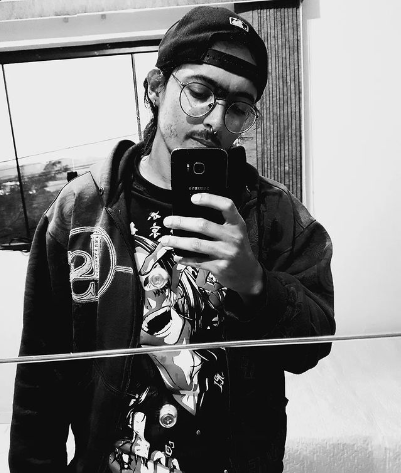

Bruno Marques de Souza
Olá. Seja bem vindo(a) à minha página pessoal. Meu nome é Bruno Marques, tenho 30 anos e sou estudante de Análise e Desenvolvimento de Sistemas pelo Unilavras. A paixão pelo universo da tecnologia, computadores e afins vem desde muito cedo. Desde criança sempre gostei de jogos, quebra-cabeças, computador, etc, porém é mais recente o interesse pelo mundo da programação.
Me formei em 2010 no Ensino Médio e eu tinha muita vontade de seguir o caminho da computação, mas passei por alguns desvios no meu trajeto. Me formei em Direito em 2015, também pelo Unilavras, e fui aprovado no exame da OAB. Trabalhei algum tempo no ramo da advocacia mas sempre tive a sensação de que estava no lugar errado. Em 2018 mudei totalmente de área quando larguei a advocacia e abri minha loja e assistência técnica de smartphones. Estava mais próximo da tecnologia novamente e mais perto do caminho que eu queria, mas ainda assim não estava satisfeito com minha carreira.
Atualmente trabalho como mototáxi. É um trabalho que me ajuda muito tanto pela questão financeira quanto pela liberdade de tempo. Isso facilita muito para que eu continue estudando. Portanto, sigo agora na minha jornada nesse trabalho e estudando para me formar em ADS para enfim seguir a carreira que tenho sonhado.